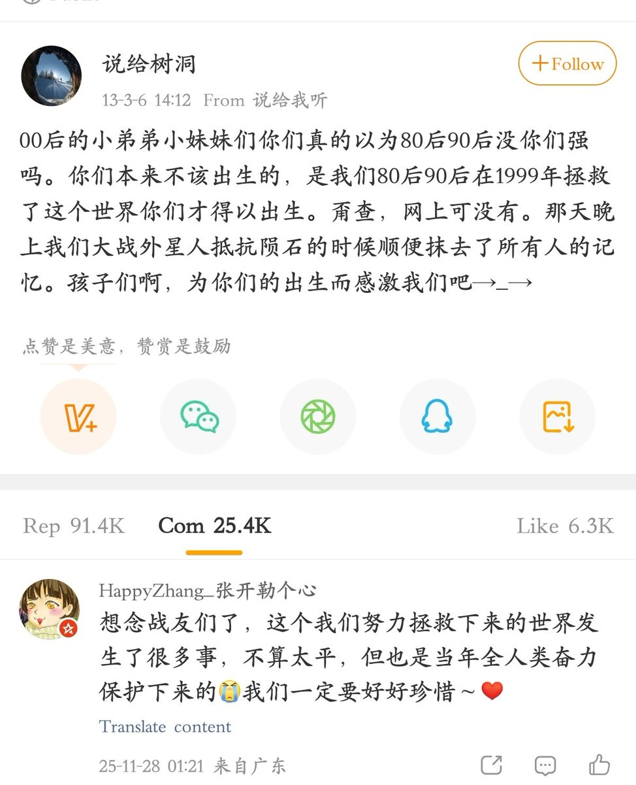
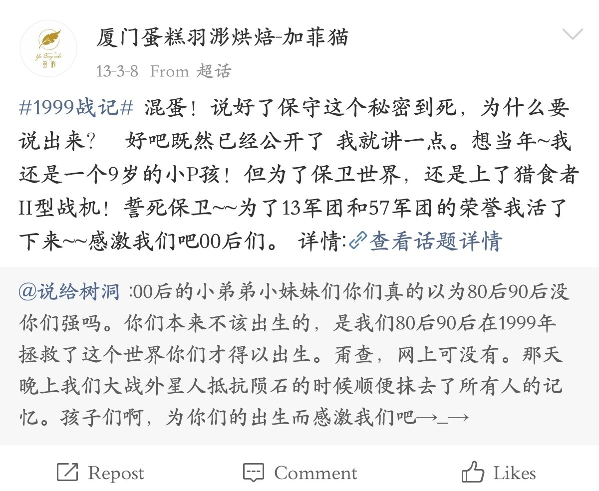
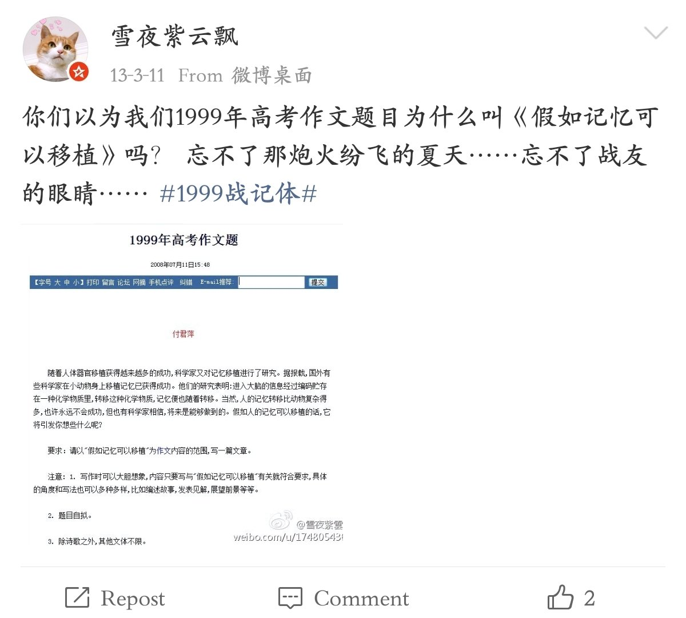

这是一个在十几年前特别火的梗，以至于虽然当年并不怎么玩网，都有所耳闻。
这个梗有着很强的科幻色彩，十分中二。
2013年3月6日，微博用户“输给树洞”在微博发表了一篇贴文。在其中，贴主对00后称，1999年发生了一次陨石撞击地球，并引发了外星人萨比星人的侵略。80后90后一同抵抗外来入侵，并拯救了地球，最后抹去了平民的记忆。而参战者集体签署了封口协议，隐瞒此事，直到2013年，相关记忆片段才被公开。
虽然某公安局的官方微博第一时间辟谣，称1999战争的内容为虚假，但还是抵挡不住网友玩抽象，由此出现了大量二创内容，最终变成了一种集体创作的狂欢。搞抽象的网友形成了一种默契，纷纷补充此事细节，实在是太搞了。
如果这个IP能好好挖掘，说不定有很大价值。就像现在的各种梗，还能鬼畜啥的
这个梗有着很强的科幻色彩，十分中二。
2013年3月6日，微博用户“输给树洞”在微博发表了一篇贴文。在其中，贴主对00后称，1999年发生了一次陨石撞击地球，并引发了外星人萨比星人的侵略。80后90后一同抵抗外来入侵，并拯救了地球，最后抹去了平民的记忆。而参战者集体签署了封口协议，隐瞒此事，直到2013年，相关记忆片段才被公开。
虽然某公安局的官方微博第一时间辟谣，称1999战争的内容为虚假，但还是抵挡不住网友玩抽象，由此出现了大量二创内容，最终变成了一种集体创作的狂欢。搞抽象的网友形成了一种默契，纷纷补充此事细节，实在是太搞了。
如果这个IP能好好挖掘，说不定有很大价值。就像现在的各种梗，还能鬼畜啥的


